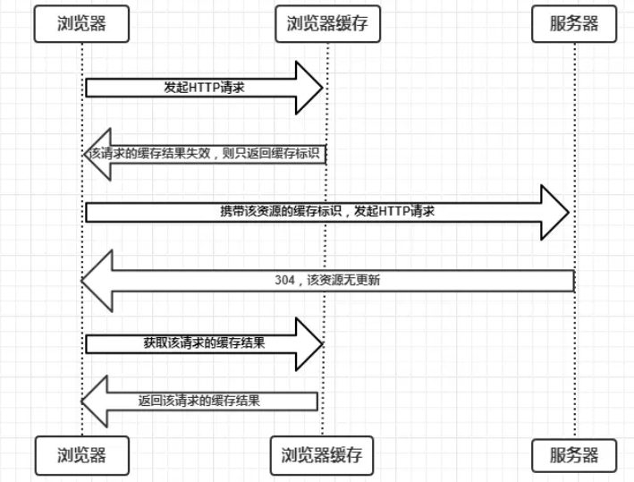

<!DOCTYPE html>
<html>
<head><meta name="generator" content="Hexo 3.8.0">
  <meta charset="utf-8">
  

  
  <title>浏览器的缓存机制 | Gzqqqqq</title>
  <meta name="viewport" content="width=device-width, initial-scale=1, maximum-scale=1">
  
  
  
  <meta name="description" content="什么是缓存，为什么使用缓存缓存 是 性能优化 中简单高效的一种优化 方式。 一个优秀的缓存策略可以缩短网页请求资源的距离，减少延迟； 并且由于缓存文件可以重复利用，还可以减少带宽，降低网络负荷。 对于一个数据请求来说，可以分为发起网络请求、后端处理、浏览器响应三个步骤。 浏览器缓存可以帮助我们在第一和第三步骤中优化性能。 比如说直接使用缓存而不发起请求，或者发起了请求但后端存储的数据和前端一致；">
<meta name="keywords" content="浏览器缓存">
<meta property="og:type" content="article">
<meta property="og:title" content="浏览器的缓存机制">
<meta property="og:url" content="http://Gzqqqqq.github.io/public/2019/04/04/浏览器的缓存机制/index.html">
<meta property="og:site_name" content="Gzqqqqq">
<meta property="og:description" content="什么是缓存，为什么使用缓存缓存 是 性能优化 中简单高效的一种优化 方式。 一个优秀的缓存策略可以缩短网页请求资源的距离，减少延迟； 并且由于缓存文件可以重复利用，还可以减少带宽，降低网络负荷。 对于一个数据请求来说，可以分为发起网络请求、后端处理、浏览器响应三个步骤。 浏览器缓存可以帮助我们在第一和第三步骤中优化性能。 比如说直接使用缓存而不发起请求，或者发起了请求但后端存储的数据和前端一致；">
<meta property="og:locale" content="default">
<meta property="og:image" content="http://gzqqqqq.github.io/public/2019/04/04/浏览器的缓存机制/第一次发送HTTP请求.png">
<meta property="og:image" content="http://gzqqqqq.github.io/public/2019/04/04/浏览器的缓存机制/Cache指令.png">
<meta property="og:image" content="http://gzqqqqq.github.io/public/2019/04/04/浏览器的缓存机制/cache-control.png">
<meta property="og:image" content="http://gzqqqqq.github.io/public/2019/04/04/浏览器的缓存机制/协商缓存生效.png">
<meta property="og:image" content="http://gzqqqqq.github.io/public/2019/04/04/浏览器的缓存机制/协商缓存失效.png">
<meta property="og:image" content="http://gzqqqqq.github.io/public/2019/04/04/浏览器的缓存机制/image.png">
<meta property="og:image" content="http://gzqqqqq.github.io/public/2019/04/04/浏览器的缓存机制/ETag和If-None-Match.png">
<meta property="og:image" content="http://gzqqqqq.github.io/public/2019/04/04/浏览器的缓存机制/缓存的机制.png">
<meta property="og:updated_time" content="2019-04-04T07:39:24.259Z">
<meta name="twitter:card" content="summary">
<meta name="twitter:title" content="浏览器的缓存机制">
<meta name="twitter:description" content="什么是缓存，为什么使用缓存缓存 是 性能优化 中简单高效的一种优化 方式。 一个优秀的缓存策略可以缩短网页请求资源的距离，减少延迟； 并且由于缓存文件可以重复利用，还可以减少带宽，降低网络负荷。 对于一个数据请求来说，可以分为发起网络请求、后端处理、浏览器响应三个步骤。 浏览器缓存可以帮助我们在第一和第三步骤中优化性能。 比如说直接使用缓存而不发起请求，或者发起了请求但后端存储的数据和前端一致；">
<meta name="twitter:image" content="http://gzqqqqq.github.io/public/2019/04/04/浏览器的缓存机制/第一次发送HTTP请求.png">
  
    <link rel="alternate" href="/atom.xml" title="Gzqqqqq" type="application/atom+xml">
  
  
    <link rel="icon" href="/images/default-avatar.jpeg">
  
  
    <link href="//fonts.googleapis.com/css?family=Source+Code+Pro" rel="stylesheet" type="text/css">
  
  <link rel="stylesheet" href="/css/style.css">
  <link rel="stylesheet" href="/css/highlight.css">
</head>
</html>
<body>
  <div id="fullpage" class="mobile-nav-right">
    
      <div id="wrapper" title="图片来自网络">
    
    
      <header id="header">
  <div id="nav-toggle" class="nav-toggle"></div>
  <div class="head-box global-width">
    <nav class="nav-box nav-right">
      
        <a class="nav-item" href="/" title>首页</a>
      
        <a class="nav-item" href="/archives" title>归档</a>
      
    </nav>
  </div>
</header>
      <div id="middlecontent" title class="global-width sidebar-right">
        <section id="main"><article id="post-浏览器的缓存机制" class="article global-container article-type-post" itemscope itemprop="blogPost">
  
    <header class="article-header">
      
  
    <h1 class="article-title" itemprop="name">
      浏览器的缓存机制
    </h1>
  

    </header>
  
  <div class="article-meta">
    <a href="/2019/04/04/浏览器的缓存机制/" class="article-date">
  <time datetime="2019-04-04T06:49:02.000Z" itemprop="datePublished">2019-04-04</time>
</a>
    
    
  <ul class="article-tag-list"><li class="article-tag-list-item"><a class="article-tag-list-link" href="/tags/浏览器缓存/">浏览器缓存</a></li></ul>

  </div>
  
    <span id="busuanzi_container_page_pv">
      本文总阅读量<span id="busuanzi_value_page_pv"></span>次
    </span>
  

  <div class="article-inner">
    
    <div class="article-content article-content-doorframe" itemprop="articleBody">
      
       
  	
  	  <h3 id="什么是缓存，为什么使用缓存"><a href="#什么是缓存，为什么使用缓存" class="headerlink" title="什么是缓存，为什么使用缓存"></a>什么是缓存，为什么使用缓存</h3><p><strong>缓存</strong> 是 <strong>性能优化</strong> 中简单高效的一种优化 <strong>方式</strong>。</p>
<p>一个优秀的<strong>缓存策略</strong>可以<strong>缩短网页请求资源的距离，减少延迟</strong>；</p>
<p>并且由于缓存文件可以<strong>重复利用</strong>，还可以<strong>减少带宽</strong>，<strong>降低网络负荷</strong>。</p>
<p>对于一个数据请求来说，可以分为发起<strong>网络请求</strong>、<strong>后端处理</strong>、<strong>浏览器响应</strong>三个步骤。</p>
<p>浏览器缓存可以帮助我们在第一和第三步骤中优化性能。</p>
<p>比如说直接使用缓存而不发起请求，或者发起了请求但后端存储的数据和前端一致；</p>
<p>那么就没有必要再将数据回传回来，这样就<strong>减少了响应数据</strong>。</p>
<hr>
<h3 id="缓存位置"><a href="#缓存位置" class="headerlink" title="缓存位置"></a>缓存位置</h3><p>从缓存的位置上来说分成四种，并且各自有优先级；</p>
<p>当一次<strong>查找缓存且都没有命中的时候</strong>，才会去<strong>请求网络</strong>。</p>
<ul>
<li><p>Service Worker</p>
</li>
<li><p>Memory Cache</p>
</li>
<li><p>Disk Cache</p>
</li>
<li><p>Push Cache</p>
</li>
</ul>
<hr>
<h3 id="Service-Worker"><a href="#Service-Worker" class="headerlink" title="Service Worker"></a>Service Worker</h3><p>Service Worker 是<strong>运行在浏览器背后的独立线程</strong>，一般可以用来实现缓存功能。</p>
<p>因为 Service Worker 中涉及到请求拦截，所以<strong>必须使用HTTPS协议</strong>来保障安全。</p>
<p>Service Worker 的缓存与浏览器其他内建的缓存机制不同；</p>
<p>它可以让我们<strong>自由控制缓存哪些文件、如何匹配缓存、如何读取缓存</strong>；</p>
<p><strong>并且缓存是持续性的</strong>。</p>
<h4 id="实现步骤："><a href="#实现步骤：" class="headerlink" title="实现步骤："></a>实现步骤：</h4><ol>
<li><p>先注册 Service Worker，然后<strong>监听到install事件</strong>以后就可以<strong>缓存</strong>需要的文件</p>
</li>
<li><p>在下次用户访问的时候就<strong>可以通过拦截请求的方式查询是否存在缓存</strong>;</p>
</li>
<li><p><strong>存在缓存</strong>的话就可以<strong>直接读取缓存</strong>文件;</p>
</li>
<li><p>否则<strong>没有命中缓存</strong>，需要去<strong>调用fetch函数获取数据</strong>。</p>
</li>
</ol>
<p><strong>注意</strong>：</p>
<p>如果我们没有在Service Worker命中缓存的话，会根据<strong>缓存查找优先级去查找数据</strong>。</p>
<p>但是不管我们是从Memory Cache中还是从网络请求中获取的数据；</p>
<p><strong>浏览器都会显示我们是从Service Worker中获取的内容</strong>。</p>
<hr>
<h4 id="Memory-Cache"><a href="#Memory-Cache" class="headerlink" title="Memory Cache"></a>Memory Cache</h4><p>Memory Cache也就<strong>是内存中的缓存</strong>；</p>
<p>主要<strong>包含</strong>的是当前<strong>页面中已经抓取到的资源</strong>；</p>
<p>例如：页面上已经下载的样式、脚本、图片等。</p>
<p>读取内存中的数据肯定比磁盘快，内存缓存虽然<strong>读取高效</strong>；</p>
<p>可是<strong>缓存持续性很短</strong>，会随着<strong>进程的释放而释放</strong>。</p>
<p>一旦我们<strong>关闭</strong> Tab 页面，内存中的缓存也<strong>就被释放了</strong>。</p>
<p>虽然<strong>内存缓存高效</strong>，但是由于<strong>内存容量小</strong>；</p>
<p>且还有其他的进行需要使用，所以，能够使用的内存并不多。</p>
<p>内存缓存中有一块重要的<strong>缓存资源是preloader相关指令</strong>下载的资源。</p>
<p>例如：</p>
<div class="highlight-box" autocomplete="off" autocorrect="off" autocapitalize="off" spellcheck="false" contenteditable="true" data-rel="BASH"><figure class="iseeu highlight /bash"><table><tr><td class="gutter"><pre><span class="line">1</span><br></pre></td><td class="code"><pre><span class="line">&lt;link rel=<span class="string">"prefetch"</span>&gt;</span><br></pre></td></tr></table></figure></div>
<p><strong>preloader的相关指令已经是页面优化的常见手段之一</strong>；</p>
<p>它可以一<strong>边解析</strong>js/css文件，<strong>一边网络请求下一个资源</strong>。</p>
<p><strong>注意</strong>：</p>
<p>内存缓存在缓存资源时并<strong>不关心返回资源的HTTP缓存头Cache-Control是什么值</strong>；</p>
<p>同时资源的匹配也并非仅仅是对URL做匹配；</p>
<p>还可能会对Content-Type，CORS等<strong>其他特征做校验</strong>。</p>
<hr>
<h4 id="Disk-Cache"><a href="#Disk-Cache" class="headerlink" title="Disk Cache"></a>Disk Cache</h4><p>Disk Cache 是存储在<strong>硬盘中的缓存</strong>，<strong>读取速度慢</strong>；</p>
<p>但是什么都能存储到磁盘中，比之 Memory Cache <strong>胜在容量和存储时效性上</strong>。</p>
<p>在所有浏览器<strong>缓存</strong>中，<strong>Disk Cache 覆盖面基本是最大的</strong>。</p>
<p>它会根据 HTTP Herder 中的<strong>字段判断哪些资源需要缓存</strong>；</p>
<p><strong>哪些资源可以不请求直接使用</strong>，<strong>哪些资源已经过期需要重新请求</strong>。</p>
<p>并且即使在跨站点的情况下，<strong>相同地址的资源一旦被硬盘缓存下来</strong>；</p>
<p><strong>就不会再次去请求数据</strong>。绝大部分的缓存都来自 Disk Cache。</p>
<p><strong>问题</strong>：</p>
<p>浏览器会把哪些文件丢进内存中？哪些丢进硬盘中？</p>
<ul>
<li><p>对于<strong>大文件</strong>来说，<strong>大概率是不存储在内存中的</strong>，反之优先</p>
</li>
<li><p>当前系统<strong>内存使用率高</strong>的话，文件<strong>优先存储进硬盘</strong></p>
</li>
</ul>
<hr>
<h4 id="Push-Cache"><a href="#Push-Cache" class="headerlink" title="Push Cache"></a>Push Cache</h4><p>Push Cache（<strong>推送缓存</strong>）是 <strong>HTTP/2中的内容</strong>；</p>
<p>当以上三种缓存都没有命中时，它才会被使用。</p>
<p>它只在<strong>会话</strong>（Session）中存在，一旦<strong>会话结束就被释放</strong>；</p>
<p>并且<strong>缓存时间也很短暂</strong>，在Chrome浏览器中只有<strong>5分钟左右</strong>；</p>
<p>同时它也并非严格执行HTTP头中的缓存指令。</p>
<ul>
<li><p>所有的资源都能被推送，并且能够被缓存；</p>
<p>但是 Edge 和 Safari 浏览器支持相对比较差</p>
</li>
<li><p>可以推送 no-cache 和 no-store 的资源</p>
</li>
<li><p><strong>一旦连接被关闭，Push Cache 就被释放</strong></p>
</li>
<li><p>多个页面可以使用同一个HTTP/2的连接，也就可以使用同一个Push Cache。</p>
<p>这主要还是依赖浏览器的实现而定，出于对性能的考虑；</p>
<p>有的浏览器会对相同域名但不同的tab标签使用同一个HTTP连接。</p>
</li>
<li><p>Push Cache 中的缓存只能被使用一次</p>
</li>
<li><p><strong>浏览器可以拒绝接受已经存在的资源推送</strong></p>
</li>
<li><p>可以给其他域名推送资源</p>
</li>
</ul>
<hr>
<p>那么为了<strong>性能</strong>的考虑，大部分的<strong>接口都应该选择好缓存策略</strong>；</p>
<p>通常浏览器缓存策略分为两种：<strong>强缓存</strong>和<strong>协商缓存</strong>；</p>
<p>并且<strong>缓存策略都是通过设置 HTTP Header 来实现的</strong>。</p>
<hr>
<h3 id="缓存机制"><a href="#缓存机制" class="headerlink" title="缓存机制"></a>缓存机制</h3><p>浏览器与服务器通信的方式为<strong>应答模式</strong>，</p>
<p>即是：<strong>浏览器发起HTTP请求 – 服务器响应该请求</strong>；</p>
<p>那么浏览器<strong>怎么确定一个资源该不该缓存</strong>，如何去缓存呢？</p>
<p>浏览器第一次向服务器发；</p>
<p>该请求后拿到<strong>请求结果</strong>后，将<strong>请求结果和缓存标识存入浏览器缓存</strong>，</p>
<p>浏览器对于缓存的处理<strong>是根据第一次请求资源时返回的响应头来确定的</strong>。</p>
<p>具体过程如下图：</p>
<p></p>
<p>由上图我们可以知道：</p>
<ul>
<li><p>浏览器<strong>每次发起请求</strong>，都会先<strong>在浏览器缓存</strong>中<strong>查找该请求的结果以及缓存标识</strong></p>
</li>
<li><p>浏览器每次<strong>拿到返回</strong>的请求结果都会<strong>将该结果和缓存标识存入浏览器缓存中</strong></p>
</li>
</ul>
<p>以上两点结论就是浏览器缓存机制的关键；</p>
<p>它确保了<strong>每个请求的缓存存入与读取</strong>。</p>
<p>这里我们<strong>根据是否需要向服务器重新发起HTTP请求将缓存过程</strong>分为两个部分</p>
<p>分别是<strong>强缓存</strong>和<strong>协商缓存</strong>。</p>
<hr>
<h3 id="强缓存"><a href="#强缓存" class="headerlink" title="强缓存"></a>强缓存</h3><p>强缓存：<strong>不会向服务器发送请求</strong>，直接<strong>从缓存中读取资源</strong>；</p>
<p>在chrome控制台的Network选项中可以看到该请求返回200的状态码；</p>
<p>并且Size显示from disk cache或from memory cache。</p>
<p><strong>强缓存可以通过设置两种HTTP Header实现：Expires 和 Cache-Control</strong>。</p>
<hr>
<h4 id="1-Expires"><a href="#1-Expires" class="headerlink" title="1. Expires"></a>1. Expires</h4><p><strong>缓存过期时间</strong>，<strong>用来指定资源到期的时间</strong>，<strong>是服务器端的具体的时间点</strong>。</p>
<p>也就是说，<strong>Expires=max-age + 请求时间</strong>，需要和Last-modified结合使用。</p>
<p><strong>Expires是Web服务器响应消息头字段</strong>，在响应http请求时告诉浏览器；</p>
<p>在<strong>过期时间前浏览器可以直接从浏览器缓存取数据</strong>，无需再次请求。</p>
<p>Expires 是 HTTP/1 的产物，<strong>受限于本地时间</strong>；</p>
<p>如果修改了本地时间，可能会造成缓存失效。</p>
<div class="highlight-box" autocomplete="off" autocorrect="off" autocapitalize="off" spellcheck="false" contenteditable="true" data-rel="BASH"><figure class="iseeu highlight /bash"><table><tr><td class="gutter"><pre><span class="line">1</span><br></pre></td><td class="code"><pre><span class="line">Expires: Wed, 22 Oct 2018 08:41:00 GMT</span><br></pre></td></tr></table></figure></div>
<p>表示资源会在 Wed, 22 Oct 2018 08:41:00 GMT 后过期，需要再次请求。</p>
<hr>
<h4 id="2-Cache-Control"><a href="#2-Cache-Control" class="headerlink" title="2. Cache-Control"></a>2. Cache-Control</h4><p>在HTTP/1.1中，Cache-Control是最重要的规则，<strong>主要用于控制网页缓存</strong>。</p>
<p>比如：</p>
<div class="highlight-box" autocomplete="off" autocorrect="off" autocapitalize="off" spellcheck="false" contenteditable="true" data-rel="BASH"><figure class="iseeu highlight /bash"><table><tr><td class="gutter"><pre><span class="line">1</span><br></pre></td><td class="code"><pre><span class="line">Cache-Control:max-age=300</span><br></pre></td></tr></table></figure></div>
<p>则代表在这个请求正确返回时间（浏览器也会记录下来）的<strong>5分钟内再次加载资源</strong>，就会命中强缓存。</p>
<p>Cache-Control可以在请求头或者响应头中设置，并且可以<strong>组合使用多种指令</strong>：</p>
<p></p>
<p><strong>public</strong>：所有内容都将被缓存（<strong>客户端和代理服务器都可缓存</strong>）。</p>
<p>具体来说响应可被任何中间节点缓存；</p>
<div class="highlight-box" autocomplete="off" autocorrect="off" autocapitalize="off" spellcheck="false" contenteditable="true" data-rel="BASH"><figure class="iseeu highlight /bash"><table><tr><td class="gutter"><pre><span class="line">1</span><br></pre></td><td class="code"><pre><span class="line">Browser &lt;-- proxy1 &lt;-- proxy2 &lt;-- Server</span><br></pre></td></tr></table></figure></div>
<p>如上所示，<strong>中间的proxy可以缓存资源</strong>；</p>
<p>比如下次再请求同一资源proxy1直接把自己缓存的东西给 Browser而不再向proxy2要。</p>
<p><strong>private</strong>：<strong>所有内容只有客户端可以缓存</strong>，Cache-Control的默认取值。</p>
<p>表示中间节点不允许缓存；<br><div class="highlight-box" autocomplete="off" autocorrect="off" autocapitalize="off" spellcheck="false" contenteditable="true" data-rel="BASH"><figure class="iseeu highlight /bash"><table><tr><td class="gutter"><pre><span class="line">1</span><br></pre></td><td class="code"><pre><span class="line">Browser &lt;-- proxy1 &lt;-- proxy2 &lt;-- Server</span><br></pre></td></tr></table></figure></div></p>
<p>proxy2会老老实实把Server 返回的数据发送给proxy1,<strong>自己不缓存任何数据</strong>。</p>
<p>当下次Browser再次请求时proxy1会<strong>做好请求转发</strong>而不是自作主张给自己缓存的数据。</p>
<p><strong>no-cache</strong>：<strong>客户端缓存内容</strong>，<strong>是否使用缓存则需要经过协商缓存来验证决定</strong>。</p>
<p>表示不使用Cache-Control的缓存控制方式做前置验证，</p>
<p>而是使用<strong>Etag或者Last-Modified字段来控制缓存</strong>。</p>
<p>需要注意的是，no-cache这个名字有一点误导。</p>
<p>设置了no-cache之后，并不是说浏览器就不再缓存数据；</p>
<p>只是浏览器在使用缓存数据时，需要先<strong>确认</strong>一下<strong>数据是否还跟服务器保持一致</strong>。</p>
<p><strong>no-store</strong>：<strong>所有内容都不会被缓存</strong>，即不使用强制缓存，也不使用协商缓存。</p>
<p><strong>max-age</strong>：max-age=xxx (xxx is numeric)<strong>表示缓存内容将在xxx秒后失效</strong>。</p>
<p><strong>s-maxage</strong>（单位为s)：同max-age作用一样，只在代理服务器中生效（比如CDN缓存）。</p>
<p>比如当s-maxage=60时，在这60秒中，即使更新了CDN的内容，浏览器也不会进行请求。</p>
<p><strong>max-age用于普通缓存，而s-maxage用于代理缓存</strong>。</p>
<p><strong>s-maxage的优先级高于max-age</strong>。</p>
<p>如果存在s-maxage，则会覆盖掉max-age和Expires header。</p>
<p><strong>max-stale：能容忍的最大过期时间</strong>。</p>
<p>max-stale指令<strong>表示了客户端愿意接收一个已经过期了的响应</strong>。</p>
<p>如果指定了max-stale的值，则最大容忍时间为对应的秒数。</p>
<p>如果<strong>没有指定</strong>，那么说明<strong>浏览器愿意接收任何age的响应</strong>。</p>
<p>（age表示响应由源站生成或确认的时间与当前时间的差值）。</p>
<p><strong>min-fresh</strong>：能够容忍的最小新鲜度。</p>
<p>in-fresh标示了客户端不愿意接受新鲜度不多于当前的age加上min-fresh设定的时间之和的响应。</p>
<p></p>
<p>从图中我们可以看到，我们可以将多个指令配合起来一起使用，达到多个目的。</p>
<p>比如说我们希望资源能被缓存下来，并且是客户端和代理服务器都能缓存，还能设置缓存失效时间等等。</p>
<hr>
<h4 id="3-Expires和Cache-Control两者对比"><a href="#3-Expires和Cache-Control两者对比" class="headerlink" title="3. Expires和Cache-Control两者对比"></a>3. Expires和Cache-Control两者对比</h4><p>其实这两者差别不大，区别就在于</p>
<p><strong>Expires 是http1.0的产物</strong>，<strong>Cache-Control是http1.1的产物</strong>，</p>
<p>两者同时存在的话，<strong>Cache-Control优先级高于Expires</strong>；</p>
<p>在某些不支持HTTP1.1的环境下，Expires就会发挥用处。</p>
<p>所以<strong>Expires其实是过时的产物</strong>，<strong>现阶段它的存在只是一种兼容性的写法</strong>。</p>
<p><strong>强缓存判断是否缓存</strong>的依据来自于<strong>是否超出某个时间或者某个时间段</strong>；</p>
<p>而<strong>不关心服务器端文件是否已经更新</strong>；</p>
<p>这可能会<strong>导致</strong>加载文件<strong>不是服务器端最新的内容</strong>；</p>
<p>此时我们需要用到<strong>协商缓存策略来获知服务器端内容是否已经发生了更新</strong>。</p>
<hr>
<h3 id="协商缓存"><a href="#协商缓存" class="headerlink" title="协商缓存"></a>协商缓存</h3><p>协商缓存就是<strong>强制缓存失效后</strong>，<strong>浏览器携带缓存标识向服务器发起请求</strong>；</p>
<p>由<strong>服务器根据缓存标识决定是否使用缓存的过程</strong>。</p>
<p>主要有以下两种情况：</p>
<p><strong>1. 协商缓存生效，返回304和Not Modified</strong></p>
<p></p>
<p><strong>2. 协商缓存失效，返回200和请求结果</strong></p>
<p></p>
<p>协商缓存可以通过设置两种 HTTP Header 实现：<strong>Last-Modified 和 ETag</strong> 。</p>
<hr>
<h4 id="1-Last-Modified和If-Modified-Since"><a href="#1-Last-Modified和If-Modified-Since" class="headerlink" title="1. Last-Modified和If-Modified-Since"></a>1. Last-Modified和If-Modified-Since</h4><p>浏览器在第一次访问资源时，服务器返回资源的同时；</p>
<p>在response header中添加 Last-Modified的header；</p>
<p><strong>值是这个资源在服务器上的最后修改时间</strong>，<strong>浏览器接收后缓存文件和header</strong>；</p>
<div class="highlight-box" autocomplete="off" autocorrect="off" autocapitalize="off" spellcheck="false" contenteditable="true" data-rel="BASH"><figure class="iseeu highlight /bash"><table><tr><td class="gutter"><pre><span class="line">1</span><br></pre></td><td class="code"><pre><span class="line">Last-Modified: Fri, 22 Jul 2016 01:47:00 GMT</span><br></pre></td></tr></table></figure></div>
<p>浏览器下一次请求这个资源；</p>
<p>浏览器检测到有 Last-Modified这个header；</p>
<p>于是<strong>添加If-Modified-Since这个header</strong>，<strong>值就是Last-Modified中的值</strong>；</p>
<p>服务器再次收到这个资源请求；</p>
<p>会根据 If-Modified-Since 中的值与服务器中这个资源的最后修改时间对比；</p>
<p>如果没有变化，返回304和空的响应体，直接从缓存读取；</p>
<p>如果<strong>If-Modified-Since的时间小于服务器中这个资源的最后修改时间</strong>；</p>
<p>说明<strong>文件有更新</strong>，于是<strong>返回新的资源文件和200</strong>。</p>
<p></p>
<h4 id="Last-Modified-的弊端"><a href="#Last-Modified-的弊端" class="headerlink" title="Last-Modified 的弊端"></a>Last-Modified 的弊端</h4><ul>
<li><p>如果本地打开缓存文件，即使没有对文件进行修改；<br>但还是会造成 Last-Modified被修改，服务端<strong>不能命中缓存导致发送相同的资源</strong>。</p>
</li>
<li><p>因为 Last-Modified 只能以秒计时，如果在不可感知的时间内修改完成文件，<br>那么服务端会认为资源还是命中了，不会返回正确的资源</p>
</li>
</ul>
<hr>
<p>根据<strong>文件修改时间</strong>来<strong>决定是否缓存尚有不足</strong>；</p>
<p>能否可以<strong>直接根据文件内容是否修改来决定缓存策略</strong>？</p>
<p>所以在 <strong>HTTP / 1.1 出现了 ETag 和If-None-Match</strong>。</p>
<hr>
<h4 id="2-ETag和If-None-Match"><a href="#2-ETag和If-None-Match" class="headerlink" title="2. ETag和If-None-Match"></a>2. ETag和If-None-Match</h4><p></p>
<p>Etag是<strong>服务器响应请求时</strong>，返回<strong>当前资源文件的一个唯一标识</strong>(由服务器生成)，</p>
<p><strong>只要资源有变化，Etag就会重新生成</strong>。</p>
<p>浏览器在<strong>下一次加载资源向服务器发送请求时</strong>，</p>
<p>会将上一次返回的Etag值放到request header里的If-None-Match里，</p>
<p>服务器只需要<strong>比较客户端传来的If-None-Match跟自己服务器上该资源的ETag是否一致</strong>:</p>
<p>就能很好地判断资源相对客户端而言<strong>是否被修改过了</strong>。</p>
<p>如果服务器发现<strong>ETag匹配不上</strong>，那么直接以常规GET 200回包形式<strong>将新的资源</strong>;</p>
<p>（当然也<strong>包括了新的ETag</strong>）<strong>发给客户端</strong>；</p>
<p>如果<strong>ETag是一致的</strong>，则<strong>直接返回304知会客户端直接使用本地缓存即可</strong>。</p>
<hr>
<h4 id="3-两者之间对比："><a href="#3-两者之间对比：" class="headerlink" title="3.两者之间对比："></a>3.两者之间对比：</h4><ul>
<li><p>第一在<strong>精确度</strong>上，<strong>Etag要优于Last-Modified</strong>。</p>
<p><strong>Last-Modified的时间单位是秒</strong>，如果某个文件在<strong>1秒内改变了多次</strong>，</p>
<p>那么他们的<strong>Last-Modified其实并没有体现出来修改</strong>；</p>
<p>但是<strong>Etag每次都会改变确保了精度</strong>；</p>
<p>如果是负载均衡的服务器，各个服务器生成的Last-Modified也有可能不一致。</p>
</li>
<li><p>第二在<strong>性能</strong>上<strong>，Etag要逊于Last-Modified</strong>；</p>
<p><strong>Last-Modified只需要记录时间，而Etag需要服务器通过算法来计算出一个hash值</strong>。</p>
</li>
<li><p>第三在<strong>优先级</strong>上，<strong>服务器校验优先考虑Etag</strong></p>
</li>
</ul>
<hr>
<h3 id="缓存机制-1"><a href="#缓存机制-1" class="headerlink" title="缓存机制"></a>缓存机制</h3><p><strong>强制缓存优先于协商缓存进行</strong>，</p>
<p>若强制缓存(Expires和Cache-Control)<strong>生效则直接使用缓存</strong>；</p>
<p>若不生效则进行协商缓存(Last-Modified / If-Modified-Since和Etag / If-None-Match)，</p>
<p><strong>协商缓存由服务器决定是否使用缓存</strong>；</p>
<p><strong>若协商缓存失效</strong>，<strong>那么代表该请求的缓存失效</strong>；</p>
<p><strong>返回200，重新返回资源和缓存标识，再存入浏览器缓存中</strong>；</p>
<p><strong>生效</strong>则<strong>返回304</strong>，<strong>继续使用缓存</strong>。</p>
<p>具体流程图如下：</p>
<p></p>
<p><strong>如果什么缓存策略都没设置，那么浏览器会怎么处理？</strong></p>
<p>对于这种情况，浏览器会采用一个启发式的算法;</p>
<p><strong>通常会取响应头中的 Date 减去 Last-Modified 值的 10% 作为缓存时间</strong>。</p>
<hr>
<h3 id="实际场景应用缓存策略"><a href="#实际场景应用缓存策略" class="headerlink" title="实际场景应用缓存策略"></a>实际场景应用缓存策略</h3><h4 id="1-频繁变动的资源"><a href="#1-频繁变动的资源" class="headerlink" title="1. 频繁变动的资源"></a>1. 频繁变动的资源</h4><div class="highlight-box" autocomplete="off" autocorrect="off" autocapitalize="off" spellcheck="false" contenteditable="true" data-rel="BASH"><figure class="iseeu highlight /bash"><table><tr><td class="gutter"><pre><span class="line">1</span><br></pre></td><td class="code"><pre><span class="line">Cache-Control: no-cache</span><br></pre></td></tr></table></figure></div>
<p>对于频繁变动的资源;</p>
<p>首先需要使用<strong>Cache-Control: no-cache使浏览器每次都请求服务器</strong>，</p>
<p>然后配合 ETag 或者 Last-Modified 来验证资源是否有效。</p>
<p>这样的做法<strong>虽然不能节省请求数量</strong>，<strong>但是能显著减少响应数据大小</strong>。</p>
<hr>
<h4 id="2-不常变化的资源"><a href="#2-不常变化的资源" class="headerlink" title="2. 不常变化的资源"></a>2. 不常变化的资源</h4><div class="highlight-box" autocomplete="off" autocorrect="off" autocapitalize="off" spellcheck="false" contenteditable="true" data-rel="BASH"><figure class="iseeu highlight /bash"><table><tr><td class="gutter"><pre><span class="line">1</span><br></pre></td><td class="code"><pre><span class="line">Cache-Control: max-age=31536000</span><br></pre></td></tr></table></figure></div>
<p>通常在处理这类资源时;</p>
<p>给它们的 <strong>Cache-Control 配置一个很大的 max-age=31536000 (一年)</strong>，</p>
<p>这样<strong>浏览器之后请求相同的 URL 会命中强制缓存</strong>。</p>
<p>而为了<strong>解决更新</strong>的问题，就<strong>需要在文件名(或者路径)中添加 hash</strong>，版本号等<strong>动态字符</strong>；</p>
<p>之后<strong>更改动态字符</strong>，<strong>从而达到更改引用 URL 的目的</strong>；</p>
<p>让之前的<strong>强制缓存失效 </strong>(其实并未立即失效，只是不再使用了而已)。</p>
<p>例如：</p>
<p>在线提供的类库 (如 jquery-3.3.1.min.js, lodash.min.js 等) 均采用这个模式</p>
<hr>
<h3 id="用户行为对浏览器缓存的影响"><a href="#用户行为对浏览器缓存的影响" class="headerlink" title="用户行为对浏览器缓存的影响"></a>用户行为对浏览器缓存的影响</h3><p>所谓用户行为对浏览器缓存的影响；</p>
<p>指的就是<strong>用户在浏览器如何操作时，会触发怎样的缓存策略</strong>。</p>
<p>主要有 3 种：</p>
<ul>
<li><p>打开网页，地址栏输入地址： <strong>查找 disk cache 中是否有匹配</strong>。</p>
<p>如有则使用；如没有则发送网络请求。</p>
</li>
<li><p>普通刷新 (F5)：因为 TAB 并没有关闭，<strong>因此 memory cache 是可用的</strong>；</p>
<p><strong>会被优先使用(如果匹配的话)</strong>。<strong>其次才是 disk cache</strong>。</p>
</li>
<li><p>强制刷新 (Ctrl + F5)：<strong>浏览器不使用缓存</strong>；</p>
<p>因此发送的<strong>请求头部均带有 Cache-control: no-cache</strong></p>
<p>(为了兼容，还带了 Pragma: no-cache),<strong>服务器直接返回 200 和最新内容</strong>。</p>
</li>
</ul>

  	
  
</div>
    
      <footer class="article-footer">
        完
      </footer>
    
  </div>
  
    
<nav id="article-nav">
  <div class="article-nav-block">
    
  </div>
  <div class="article-nav-block">
    
      <a href="/2019/04/02/Web存储机制/" id="article-nav-older" class="article-nav-link-wrap">
        <div class="article-nav-title">Web存储机制</div>
        <strong class="article-nav-caption"></strong>
      </a>
    
  </div>
</nav>

    
<div id="gitmentContainer"></div>
<link rel="stylesheet" href="https://imsun.github.io/gitment/style/default.css">
<script src="https://imsun.github.io/gitment/dist/gitment.browser.js"></script>
<script>
var gitment = new Gitment({
  owner: '',
  repo: '',
  oauth: {
    client_id: '',
    client_secret: '',
  },
})
gitment.render('gitmentContainer')
</script>

  
  
</article>
</section>
        <aside id="sidebar">
  
    <div class="widget-box">
  <div class="avatar-box">
    
    <h3 class="avatar-name">
      
        椿去湫来
      
    </h3>
    <p class="avatar-slogan">
      如果有来生，我要做一棵树，站成永恒，没有悲欢的姿势。
    </p>
  </div>
</div>


  
    

  
    
  <div class="widget-box">
    <h3 class="widget-title">Tags</h3>
    <div class="widget">
      <ul class="tag-list"><li class="tag-list-item"><a class="tag-list-link" href="/tags/Cookie/">Cookie</a></li><li class="tag-list-item"><a class="tag-list-link" href="/tags/DOM/">DOM</a></li><li class="tag-list-item"><a class="tag-list-link" href="/tags/Session/">Session</a></li><li class="tag-list-item"><a class="tag-list-link" href="/tags/css/">css</a></li><li class="tag-list-item"><a class="tag-list-link" href="/tags/git/">git</a></li><li class="tag-list-item"><a class="tag-list-link" href="/tags/javascript/">javascript</a></li><li class="tag-list-item"><a class="tag-list-link" href="/tags/node/">node</a></li><li class="tag-list-item"><a class="tag-list-link" href="/tags/vue/">vue</a></li><li class="tag-list-item"><a class="tag-list-link" href="/tags/存储机制/">存储机制</a></li><li class="tag-list-item"><a class="tag-list-link" href="/tags/样例/">样例</a></li><li class="tag-list-item"><a class="tag-list-link" href="/tags/正则表达式/">正则表达式</a></li><li class="tag-list-item"><a class="tag-list-link" href="/tags/浏览器缓存/">浏览器缓存</a></li><li class="tag-list-item"><a class="tag-list-link" href="/tags/私人/">私人</a></li></ul>
    </div>
  </div>


  
    
  <div class="widget-box">
    <h3 class="widget-title">Tag Cloud</h3>
    <div class="widget tagcloud">
      <a href="/tags/Cookie/" style="font-size: 10px;">Cookie</a> <a href="/tags/DOM/" style="font-size: 10px;">DOM</a> <a href="/tags/Session/" style="font-size: 10px;">Session</a> <a href="/tags/css/" style="font-size: 15px;">css</a> <a href="/tags/git/" style="font-size: 10px;">git</a> <a href="/tags/javascript/" style="font-size: 20px;">javascript</a> <a href="/tags/node/" style="font-size: 10px;">node</a> <a href="/tags/vue/" style="font-size: 10px;">vue</a> <a href="/tags/存储机制/" style="font-size: 10px;">存储机制</a> <a href="/tags/样例/" style="font-size: 10px;">样例</a> <a href="/tags/正则表达式/" style="font-size: 10px;">正则表达式</a> <a href="/tags/浏览器缓存/" style="font-size: 10px;">浏览器缓存</a> <a href="/tags/私人/" style="font-size: 10px;">私人</a>
    </div>
  </div>

  
    
  <div class="widget-box">
    <h3 class="widget-title">Archives</h3>
    <div class="widget">
      <ul class="archive-list"><li class="archive-list-item"><a class="archive-list-link" href="/archives/2019/04/">April 2019</a></li><li class="archive-list-item"><a class="archive-list-link" href="/archives/2019/03/">March 2019</a></li></ul>
    </div>
  </div>

  
    
  <div class="widget-box">
    <h3 class="widget-title">Recent Posts</h3>
    <div class="widget">
      <ul>
        
          <li>
            <a href="/2019/04/04/浏览器的缓存机制/">浏览器的缓存机制</a>
          </li>
        
          <li>
            <a href="/2019/04/02/Web存储机制/">Web存储机制</a>
          </li>
        
          <li>
            <a href="/2019/04/01/Session/">Session</a>
          </li>
        
          <li>
            <a href="/2019/04/01/Cookie/">Cookie</a>
          </li>
        
          <li>
            <a href="/2019/04/01/原生ajax请求过程/">原生ajax请求过程</a>
          </li>
        
      </ul>
    </div>
  </div>

  
</aside>
      </div>
      <footer id="footer">
  <div class="foot-box global-width">
    &copy; 2019 Gzqqqqq &nbsp;&nbsp;
    Powered by <a href="http://hexo.io/" target="_blank">Hexo</a>
    &nbsp;|&nbsp;主题 <a href="https://github.com/yiluyanxia/hexo-theme-antiquity">antiquity</a>
    <br>
    <script async src="//busuanzi.ibruce.info/busuanzi/2.3/busuanzi.pure.mini.js"></script>
    <span id="busuanzi_container_site_pv">阁下是第<span id="busuanzi_value_site_pv"></span>个访客</span>
  </div>
</footer>
      <script src="//ajax.googleapis.com/ajax/libs/jquery/2.0.3/jquery.min.js"></script>

<script src="/js/jquery-2.0.3.min.js"></script>

  <link rel="stylesheet" href="/fancybox/jquery.fancybox.css">
  <script src="/fancybox/jquery.fancybox.pack.js"></script>


<script src="/js/script.js"></script>


    </div>
    <nav id="mobile-nav" class="mobile-nav-box">
  <div class="mobile-nav-img mobile-nav-top"></div>
  
    <a href="/" class="mobile-nav-link">首页</a>
  
    <a href="/archives" class="mobile-nav-link">归档</a>
  
  <div class="mobile-nav-img  mobile-nav-bottom"></div>
</nav>    
  </div>
</body>
</html>